Día 1 · Rabat
Casablanca → Rabat
Aterrizaje y traslado terrestre a Rabat (1h 15). Kasbah de los Udayas, Torre Hassan, Mausoleo de Mohammed V. Cena en Dar Rbatia.
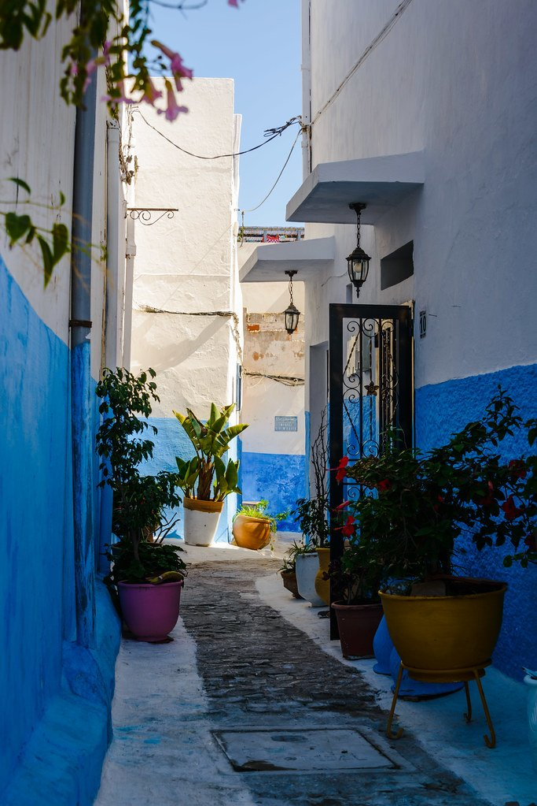

Las Cuatro Capitales y el Atlas · Edición mayo 2027
Ver fechas y preciosMarruecos tiene una particularidad estructural: durante mil años fue gobernado por dinastías que mudaron la capital con cada cambio de poder. Fez (los meriníes), Mequínez (Moulay Ismail), Marrakech (los almorávides y saadíes), Rabat (los meriníes y los alauitas actuales). Las cuatro siguen siendo ciudades imperiales — todas amuralladas, todas con su medina, mellah y kasbah, todas con su sistema completo de souks especializados por gremio.
Lo que une a las cuatro: los oficios. El zellige (mosaico geométrico islámico) que cubre Bahia Palace sale de los talleres de Fez. El cuero del Chouara — la curtiembre del siglo XI todavía operativa. El damasquinado, el caftán, la caligrafía cúfica, los brocados de seda y oro. Más allá: el Alto Atlas, donde los Imazighen (bereberes, hombres libres) preceden al Islam por nueve mil años y donde el tamazight tiene rango constitucional. Mayo es la ventana exacta: roses florece en Kelaa M'Gouna, el calor del Sahara aún no es brutal, los almendros del Atlas terminan de florecer.
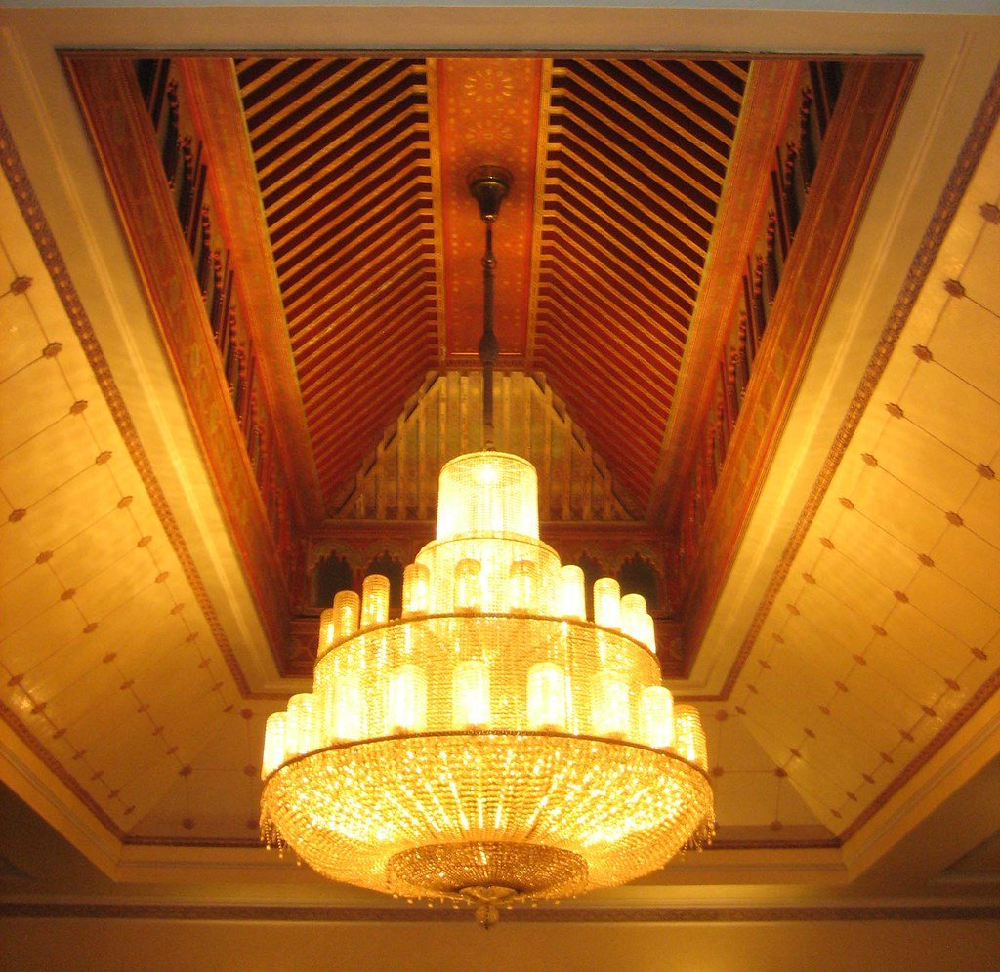
Cuarteto de música devocional fasi con percusión y voces en qasidas mevleví — el sufismo de Marruecos en su forma más profunda.
El Berber Hospitality Centre restaurado con la familia del moqaddem local. 14 habitaciones, vista al Toubkal, hospitalidad bereber real.
Música de trance descendente de los esclavos sub-saharianos. Maestro con guembri (laud de tres cuerdas) y qarqaba.
Aterrizaje y traslado terrestre a Rabat (1h 15). Kasbah de los Udayas, Torre Hassan, Mausoleo de Mohammed V. Cena en Dar Rbatia.

Ruinas romanas Volubilis con arqueólogo. Mequínez: Bab Mansour, establos reales, granero monumental. Llegada Fez al ocaso.
Madrasa Bou Inania, Karaouine Mosque/University, Funduq Nejjarine. Chouara Tannery con guida específico de gremios del cuero.
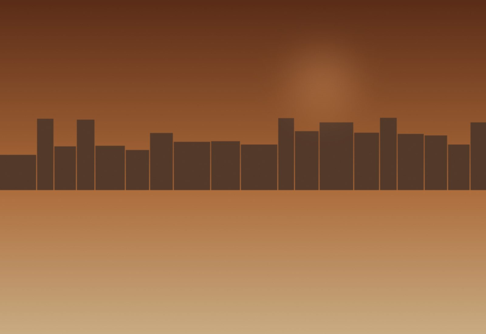
Maestro de zellige (cada estrella requiere 24 piezas talladas a mano). Calígrafo, damasquinador, brocados. Hammam ritual privado. Sesión privada Hadra El Fassia sufí al ocaso.
Cruce Atlas Medio vía Ifrane (la Suiza marroquí) y cedros del Atlas. Llegada Imlil (1.740m) por la tarde. Cena familiar bereber.
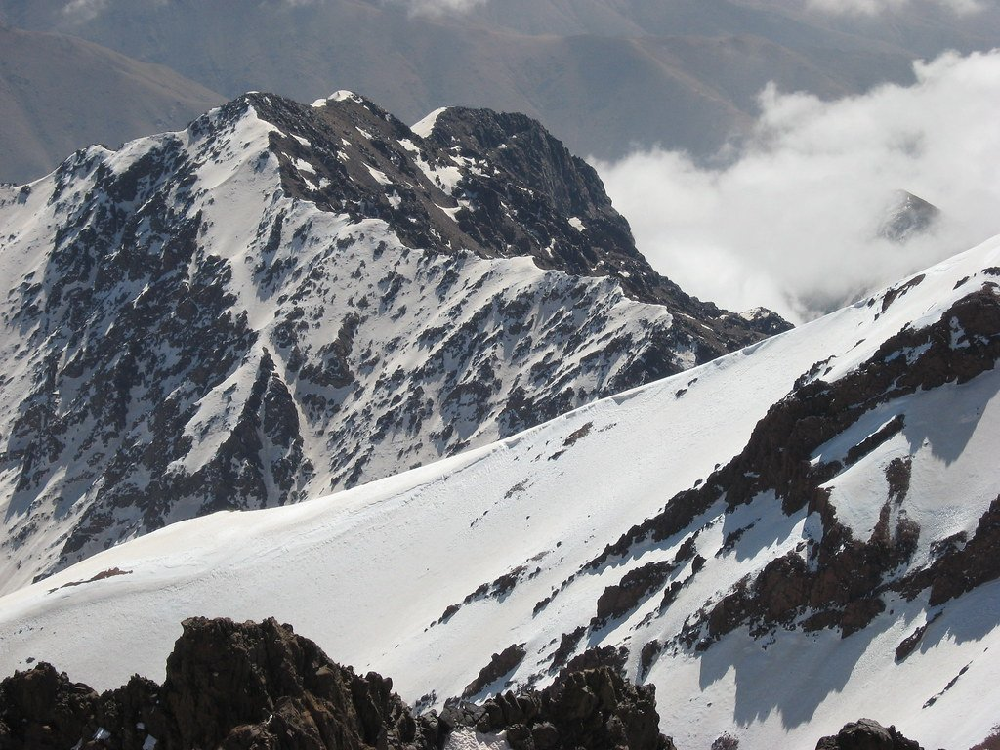
Caminata desde Imlil a Aremd (45 min). Visita a familia bereber. Pan en horno comunal. Opcional Tizi n'Tamatert (2.270m).
Cruce paso Tizi n'Tichka (2.260m). Llegada Marrakech tarde. Jemaa el-Fnaa al ocaso.
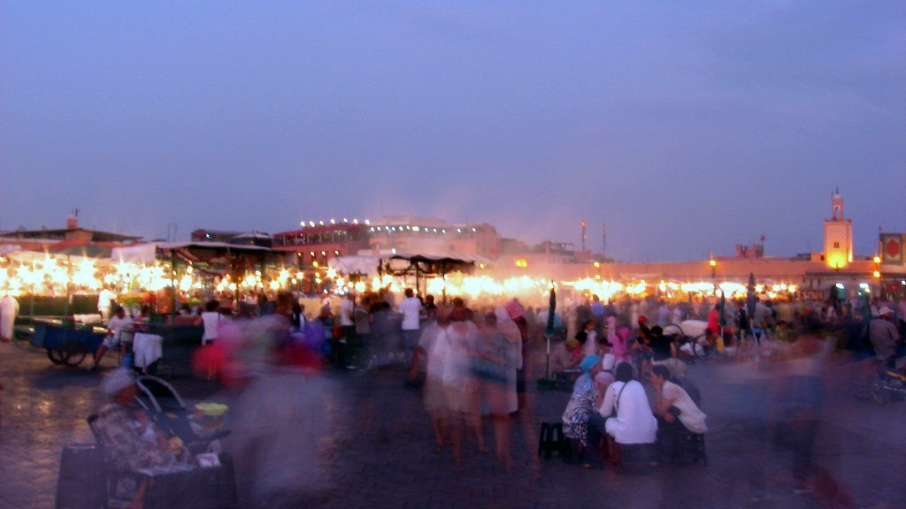
Madrasa Ben Youssef, Saadian Tombs (escondidas 300 años hasta 1917), Bahia Palace. Souks especializados con guida de gremios. Maestro caftanero. Cena en Yacout.
Jardin Majorelle + Musée Yves Saint Laurent (Studio KO). Clase de cocina marroquí. Cena callejera Jemaa el-Fnaa con guía. Sesión privada Maâlem Gnawa noche.
Mañana libre. Traslado Menara aeropuerto. Vuelos.
Sumá días al final del viaje, con salidas privadas.
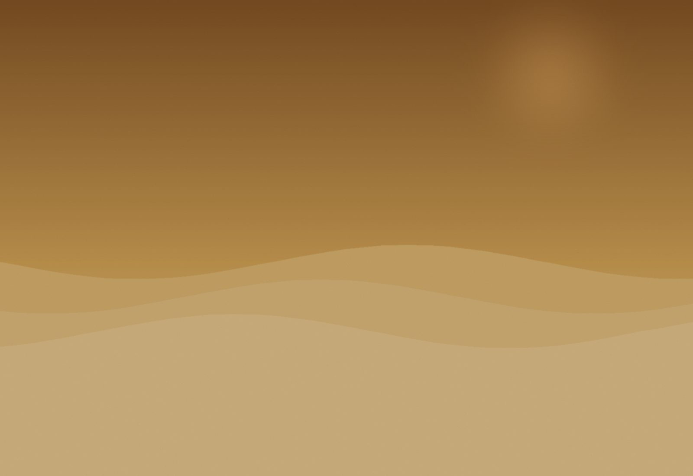
Vuelo a Ouarzazate, drive a Merzouga, dos noches en desert camp con dunas, camellos y cielo estrellado del Sahara.
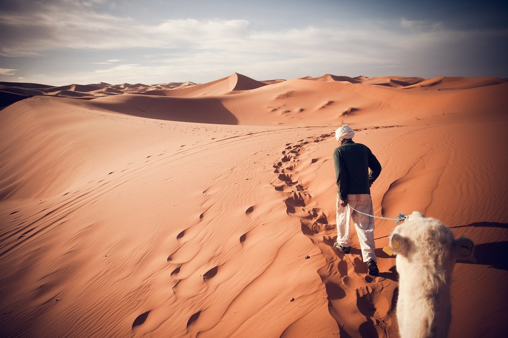
El antiguo Mogador, ciudad amurallada portuguesa del XVI, gnawa festival si las fechas coinciden, playa atlántica.
Pre-trip al norte, la ciudad pintada de azul del Rif, mucho más calma que las medinas imperiales.
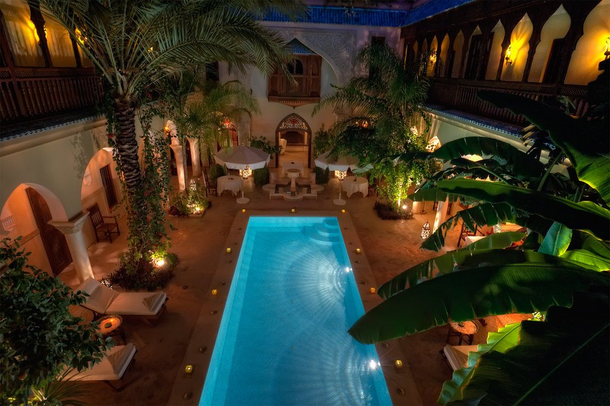
Rabat (boutique 5 estrellas con jardines)
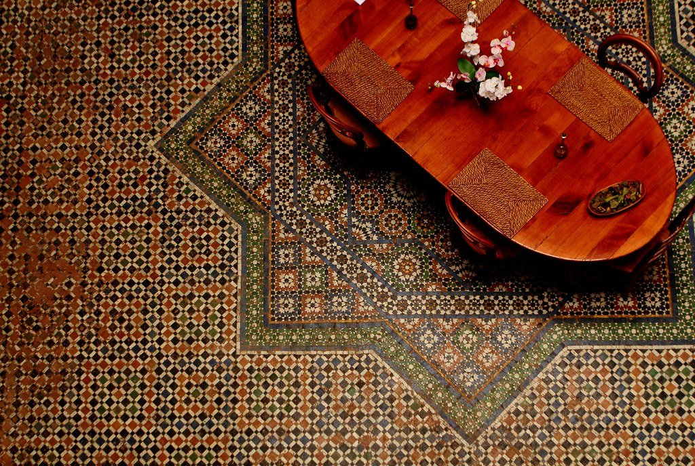
Fez (palacete colonial XIX en medina)
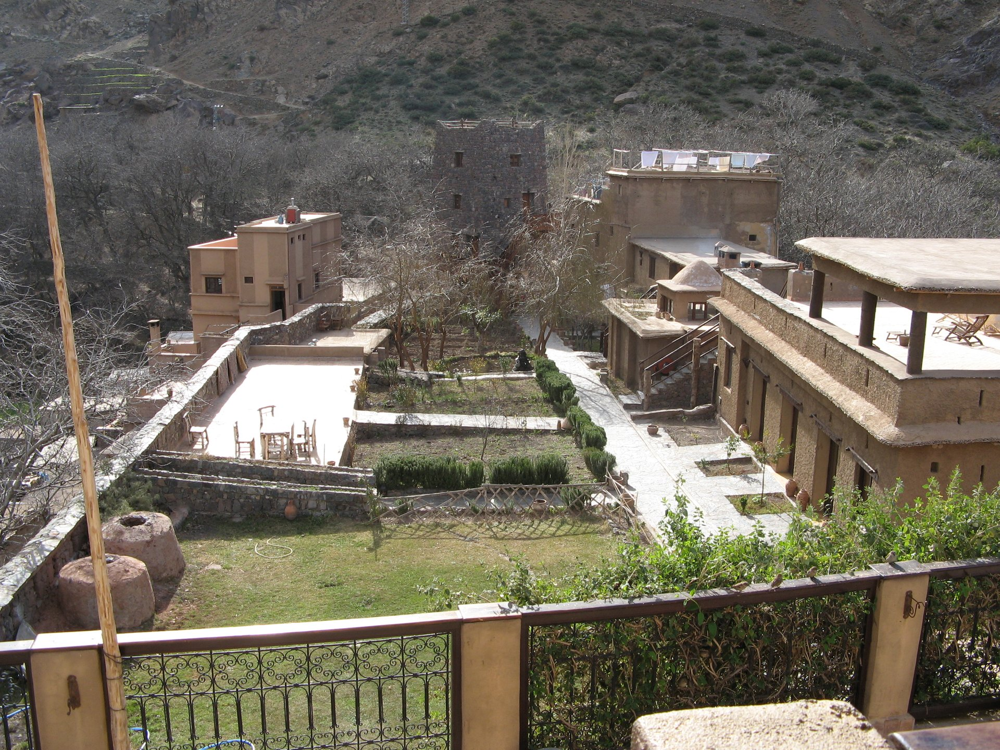
Imlil (lodge bereber al pie del Toubkal)
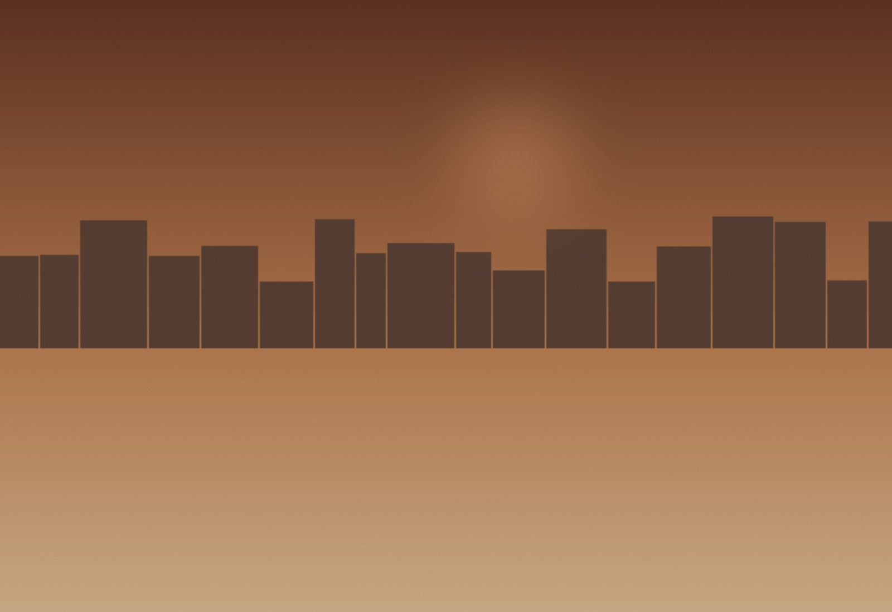
Marrakech (riad-palacio en corazón de la medina)
| Salida | Disponibilidad | Precio desde | |
|---|---|---|---|
| 8 may 2027 | Abierta | $10,800 | Reservar → |
| 15 may 2027 | Pocas plazas | $10,800 | Reservar → |
| 22 may 2027 | Abierta | $10,800 | Reservar → |
| 29 may 2027 | Abierta | $10,800 | Reservar → |
| 5 jun 2027 | Lista de espera | $11,200 | Reservar → |
Precios por persona en habitación doble. Suplemento de habitación individual a consultar.